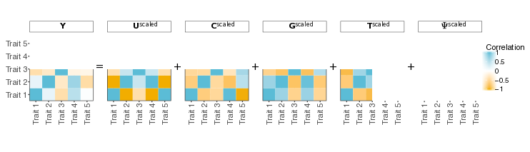

PhenotypeSimulator
PhenotypeSimulator allows for the flexible simulation of phenotypes from different genetic and non-genetic (noise) components.
In quantitative genetics, genotype to phenotype mapping is commonly realised by fitting a linear model to the genotype as the explanatory variable and the phenotype as the response variable. Other explanatory variable such as additional sample measures (e.g. age, height, weight) or batch effects can also be included. For linear mixed models, in addition to the fixed effects of the genotype and the covariates, different random effect components can be included, accounting for population structure in the study cohort or environmental effects. The application of linear and linear mixed models in quantitative genetics ranges from genetic studies in model organism such as yeast and Arabidopsis thaliana to human molecular, morphological or imaging derived traits. Developing new methods for increasing numbers of sample cohorts, phenotypic measurements or complexity of phenotypes to analyse, often requires the simulation of datasets with a specific underlying phenotype structure.
PhenotypeSimulator allows for the simulation of complex phenotypes under different models, including genetic variant effects and infinitesimal genetic effects (reflecting population structure) as well as correlated, non-genetic covariates and observational noise effects. Different phenotypic effects can be combined into a final phenotype while controlling for the proportion of variance explained by each of the components. For each component, the number of variables, their distribution and the design of their effect across traits can be customised.

Getting Started
Full documentation of PhenotypeSimulator is available at http://HannahVMeyer.github.io/PhenotypeSimulator/.
The current github version of PhenotypeSimulator is: 0.3.1 and can be installed via
library(devtools)
install_github("HannahVMeyer/PhenotypeSimulator")The current CRAN version of PhenotypeSimulator is: 0.2.2 (soon to be updated!)
A log of version changes can be found here.
Citation
Meyer, HV & Birney E (2018) PhenotypeSimulator: A comprehensive framework for simulating multi-trait, multi-locus genotype to phenotype relationships, Bioinformatics, 34(17):2951–2956